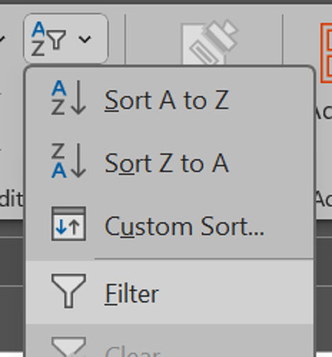
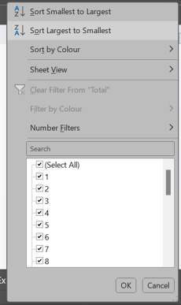

Task 2 - Sorting and Filtering
Step 1 - Adding the filter
-
Click any data in the cell of the table.
-
Press the shortcut.

-
Go to Home tab.
-
Then, Editing section and click

-
Select Filter.
Step 2 - Sorting the data
-
The header of the table should have a dropdown menu button that look like this.
-
Click it to display options to sort your data.

-
Try sorting the data by Rank from smallest to largest and vice versa.